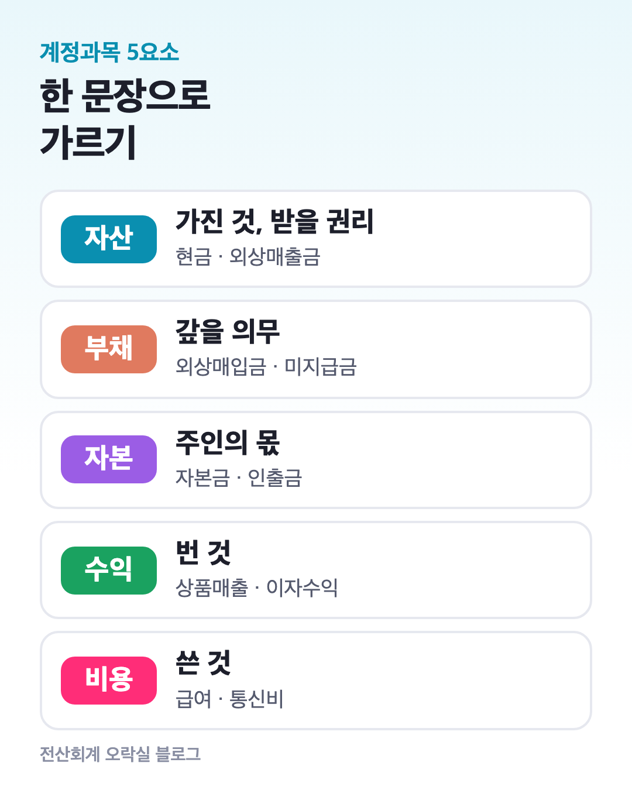
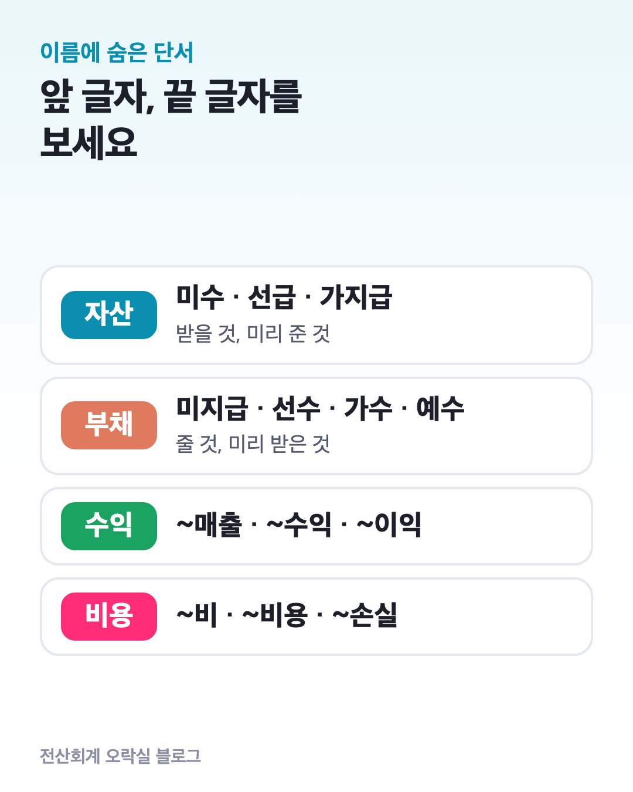
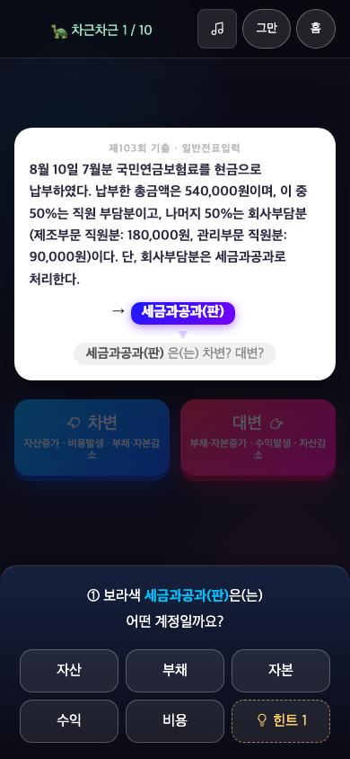
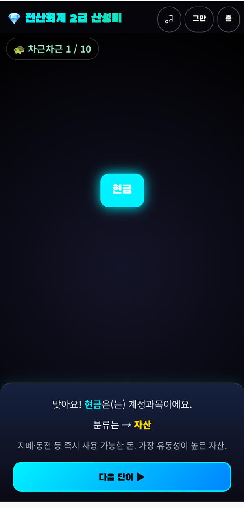

계정과목 5요소 분류법｜자산·부채·자본·수익·비용, 이름만 보고 가르는 요령
분개를 하려면 먼저 그 계정과목이 5요소 중 어디인지 알아야 합니다. 미수금이 자산인지 부채인지 헷갈리면, 차변·대변도 같이 틀려요.
이 글에서는 ① 5요소를 한 문장씩으로 정의하고, ② 계정과목 이름에 숨은 단서로 가르는 요령, ③ 자주 틀리는 계정, ④ 연습문제 12개를 정리합니다.

1. 5요소를 한 문장씩으로
| 요소 | 한 문장 | 대표 계정 |
|---|---|---|
| 자산 | 회사가 가진 것, 나중에 받을 권리 | 현금, 보통예금, 외상매출금, 상품, 비품 |
| 부채 | 나중에 갚거나 해 줘야 할 의무 | 외상매입금, 미지급금, 단기차입금 |
| 자본 | 주인(사업주)의 몫 | 자본금, 인출금 |
| 수익 | 장사해서 번 것 | 상품매출, 이자수익, 임대료 |
| 비용 | 벌기 위해 쓴 것 | 급여, 통신비, 감가상각비 |
자산·부채·자본은 어느 날 기준으로 남아 있는 것(재무상태표), 수익·비용은 한 기간 동안 생긴 것(손익계산서)입니다. 이 구분만 잡혀도 절반은 갈라져요.
2. 이름 끝 글자에 단서가 있어요

- “~매출, ~수익, ~이익”으로 끝나면 수익 — 상품매출, 이자수익, 수수료수익, 유형자산처분이익
- “~비, ~비용, ~손실”로 끝나면 비용 — 통신비, 복리후생비, 이자비용, 잡손실
- “~금”은 단서가 아닙니다 — 미수금(자산), 미지급금(부채), 자본금(자본)처럼 세 요소에 다 있어요. 이럴 땐 앞 글자를 봅니다.
| 앞 글자 | 뜻 | 요소 |
|---|---|---|
| 미수 · 선급 · 가지급 | 받을 것, 미리 준 것 | 자산 |
| 미지급 · 선수 · 가수 · 예수 | 줄 것, 미리 받은 것, 맡아 둔 것 | 부채 |
3. 이름만으로는 헷갈리는 계정 5개
임대료 vs 임차료
임대료는 빌려주고 받는 돈(수익), 임차료는 빌려 쓰고 내는 돈(비용)입니다. “대 = 내줌, 차 = 빌림”으로 외워요.
예수금
직원 급여에서 소득세·4대보험료를 떼어 잠시 맡아 둔 돈입니다. 회사 돈이 아니라 나중에 나라에 내야 하니 부채예요.
인출금
개인기업 사업주가 사업 돈을 개인 용도로 가져간 금액입니다. 비용이 아니라 자본을 줄이는 자본 계정이에요.
감가상각비 vs 감가상각누계액
감가상각비는 그해 가치가 줄어든 만큼의 비용입니다. 감가상각누계액은 건물·비품 같은 자산에서 빼서 보여 주는 자산의 차감 계정이라 비용이 아니에요.
상품 vs 상품매출
상품은 팔려고 사 둔 물건(자산), 상품매출은 그 물건을 팔아서 생긴 수익입니다.
4. 연습문제 12개
각 계정이 5요소 중 어디인지 먼저 말해 보고, 눌러서 답을 확인하세요.
① 받을어음
자산 — 상대가 나중에 돈을 주겠다고 써 준 어음(받을 권리)
② 선수금
부채 — 계약금을 미리 받았으니 물건을 줘야 할 의무
③ 수도광열비
비용 — 수도·전기·가스 요금
④ 가수금
부채 — 이유를 모르는 채 임시로 받은 돈(나중에 정산)
⑤ 단기매매증권
자산 — 단기간 사고팔 목적으로 가진 주식·채권
⑥ 수수료수익
수익 — 서비스를 제공하고 받은 수수료
⑦ 지급어음
부채 — 내가 써 준 어음(나중에 줘야 할 돈)
⑧ 가지급금
자산 — 용도가 정해지기 전에 미리 내준 돈(나중에 정산받음)
⑨ 세금과공과
비용 — 재산세·자동차세 같은 세금과 공과금
⑩ 차량운반구
자산 — 업무용 자동차·트럭
⑪ 유형자산처분이익
수익 — 비품·차량을 장부가보다 비싸게 팔아서 생긴 이익
⑫ 대손상각비
비용 — 외상매출금 중 못 받게 된 금액
5. 한 장 정리
| 단서 | 요소 |
|---|---|
| ~매출 · ~수익 · ~이익 · 임대료 | 수익 |
| ~비 · ~비용 · ~손실 · 임차료 | 비용 |
| 미수 · 선급 · 가지급 · 받을어음 | 자산 |
| 미지급 · 선수 · 가수 · 예수 · 지급어음 · 차입금 | 부채 |
| 자본금 · 인출금 | 자본 |
5요소가 바로 나오면 다음은 차변과 대변입니다. 자산·비용은 늘면 차변, 부채·자본·수익은 늘면 대변이에요.
처음 공부하는 순서는 시험 구성과 공부 순서 글에 정리해 두었습니다.
6. 게임으로 반복하고 싶다면
분류는 외우는 것보다 빨리, 여러 번 보는 것이 효과가 큽니다. 전산회계 오락실의 계정과목 산성비는 떨어지는 단어 중 계정과목만 골라 터뜨리는 게임이에요.
난이도 2부터는 5요소 분류까지 맞혀야 점수가 들어갑니다.

처음이라면 차근차근 모드부터 해 보세요. 기출 거래 문장 속 계정과목을 하나씩 짚어 주고, 이 글에서처럼 “어떤 요소인가요?”를 먼저 고르게 합니다.
맞히면 분류와 설명을 바로 보여 줘요.

출처: 한국세무사회 시험개요(전산회계 2급 평가범위)
이 블로그는 ‘전산회계 오락실’ 앱 운영자가 씁니다. 공식 자료와 대조해 정리했습니다.